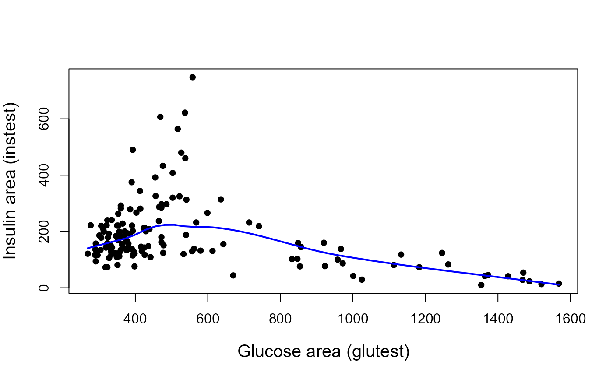
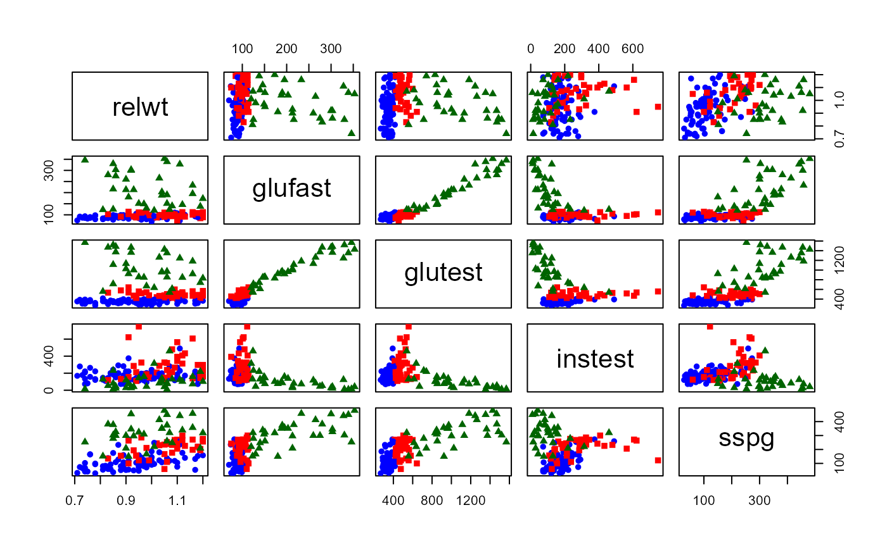
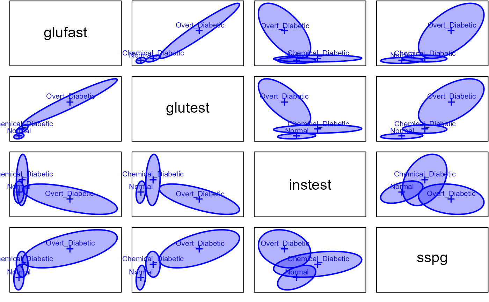
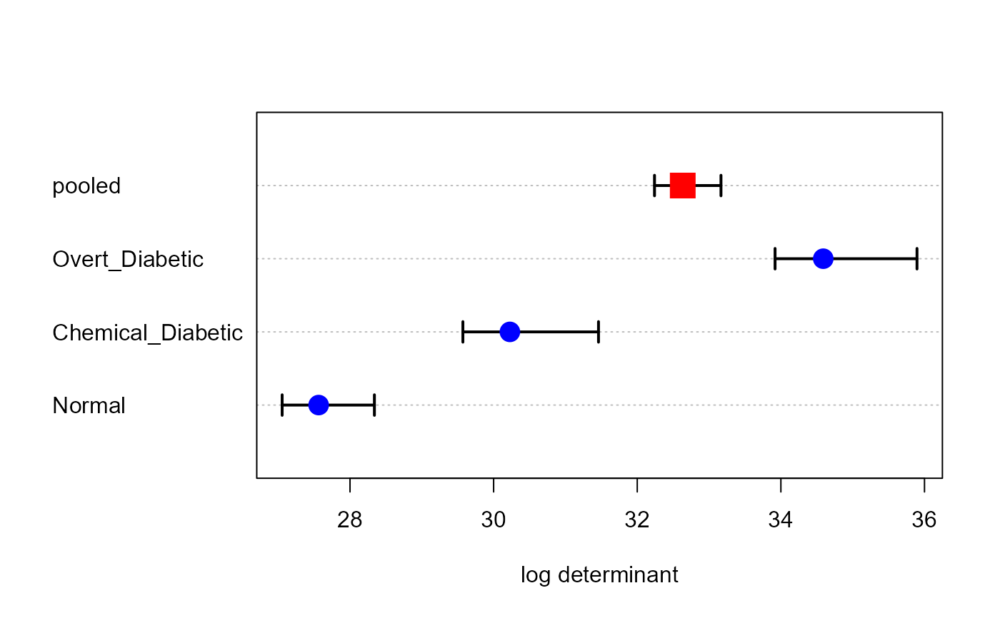
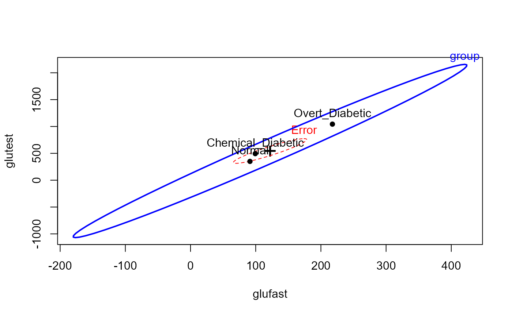
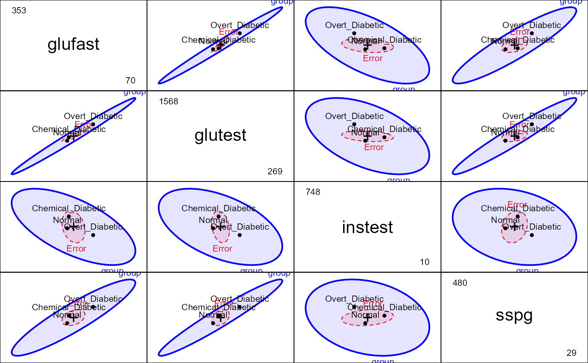

Diabetes.RdReaven and Miller (1979) examined the relationship among blood chemistry measures of glucose tolerance and insulin in 145 nonobese adults. They used the PRIM9 system at the Stanford Linear Accelerator Center to visualize the data in 3D, and discovered a peculiar pattern that looked like a large blob with two wings in different directions.
After further analysis, the subjects were classified as subclinical (chemical) diabetics, overt diabetics and normals. This study was influential in defining the stages of development of Type 2 diabetes. Overt diabetes is the most advanced stage, characterized by elevated fasting blood glucose concentration and classical symptoms. Preceding overt diabetes is the latent or chemical diabetic stage, with no symptoms of diabetes but demonstrable abnormality of oral or intravenous glucose tolerance.
data("Diabetes")A data frame with 145 observations on the following 6 variables.
relwtrelative weight, expressed as the ratio of actual weight to expected weight, given the person's height, a numeric vector
glufastfasting plasma glucose level, a numeric vector
glutesttest plasma glucose level, a measure of glucose intolerance, a numeric vector
instestplasma insulin during test, a measure of insulin response to oral glucose, a numeric vector
sspgsteady state plasma glucose, a measure of insulin resistance, a numeric vector
groupdiagnostic group, a factor with levels Normal Chemical_Diabetic Overt_Diabetic
glutest was defined as the "area under the plasma glucose curve for the three hour
oral glucose tolerance test." Reaven & Miller refer to this variable as "Glucose area".
instest was defined as the "area under the plasma insulin curve", and is referred
to in the paper as "Insulin area".
This study was influential in defining the stages of development of Type 2 diabetes. Overt diabetes is the most advanced stage, characterized by elevated fasting blood glucose concentration and classical symptoms. Preceding overt diabetes is the latent or chemical diabetic stage, with no symptoms of diabetes but demonstrable abnormality of oral or intravenous glucose tolerance.
Andrews, D. F. & Herzberg, A. M. (1985). Data: A Collection of Problems from Many Fields for the Student and Research Worker, Springer-Verlag, Ch. 36.
Friendly, M. (1991). SAS System for Statistical Graphics, Cary, NC: SAS Institute.
Reaven, G. M. and Miller, R. G. (1979). An attempt to define the nature of chemical diabetes using a multidimensional analysis. Diabetologia, 16, 17-24.
data(Diabetes)
col <- c("blue", "red", "darkgreen")[Diabetes$group]
pch <- c(16,15,17)[Diabetes$group]
# a perplexing plot, similar to Fig 2, but with a loess smooth
plot(instest ~ glutest, data=Diabetes, pch=16,
cex.lab=1.25,
xlab="Glucose area (glutest)",
ylab="Insulin area (instest)")
lines( loess.smooth(Diabetes$glutest, Diabetes$instest), col="blue", lwd=2)

# scatterplot matrix, colored by group
plot(Diabetes[,1:5], col=col, pch=pch)

# covariance ellipses
covEllipses(Diabetes[,2:5], Diabetes$group, fill=TRUE, pooled=FALSE,
col=col)
covEllipses(Diabetes[,2:5], Diabetes$group, fill=TRUE, pooled=FALSE,
col=col, variables=1:4)

# Box's M test
diab.boxm <- boxM(Diabetes[,2:5], Diabetes$group)
diab.boxm
#>
#> Box's M-test for Homogeneity of Covariance Matrices
#>
#> data: Diabetes[, 2:5]
#> Chi-Sq (approx.) = 382.84, df = 20, p-value < 2.2e-16
#>
plot(diab.boxm)

# heplots
diab.mlm <- lm(cbind(glufast, glutest, instest, sspg) ~ group, data=Diabetes)
heplot(diab.mlm)

pairs(diab.mlm, fill=TRUE, fill.alpha=0.1)
